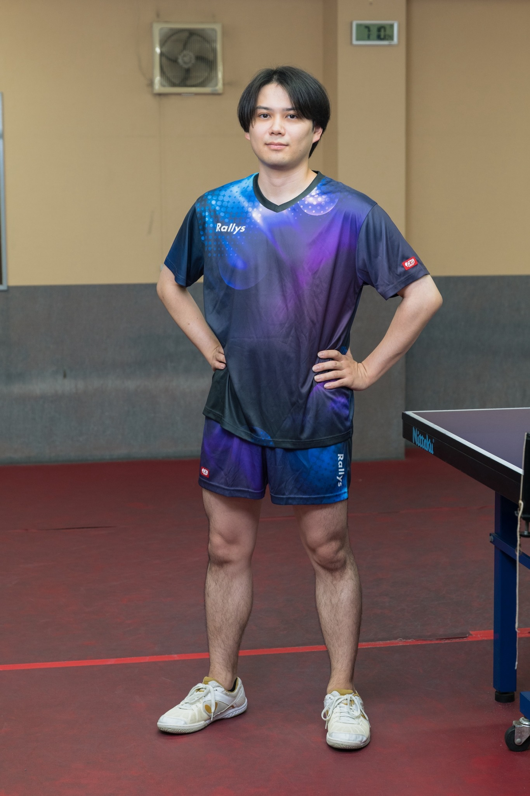

一般プレーヤー
HIKARU OTA
太田 輝
Status
ここに自己紹介文が入ります。卓球を始めたきっかけ、これまでの競技歴、プレースタイルの特徴などを紹介します。
得意なプレーや試合で大切にしていること、練習で取り組んでいることなど、トップページより一歩踏み込んだ内容を書くと読み応えが出ます。
今後の目標や、応援してくれる方へのメッセージで締めくくると、人柄が伝わるプロフィールになります。
※ 10段階の自己評価です

一般プレーヤー
太田 輝
ここに自己紹介文が入ります。卓球を始めたきっかけ、これまでの競技歴、プレースタイルの特徴などを紹介します。
得意なプレーや試合で大切にしていること、練習で取り組んでいることなど、トップページより一歩踏み込んだ内容を書くと読み応えが出ます。
今後の目標や、応援してくれる方へのメッセージで締めくくると、人柄が伝わるプロフィールになります。
※ 10段階の自己評価です